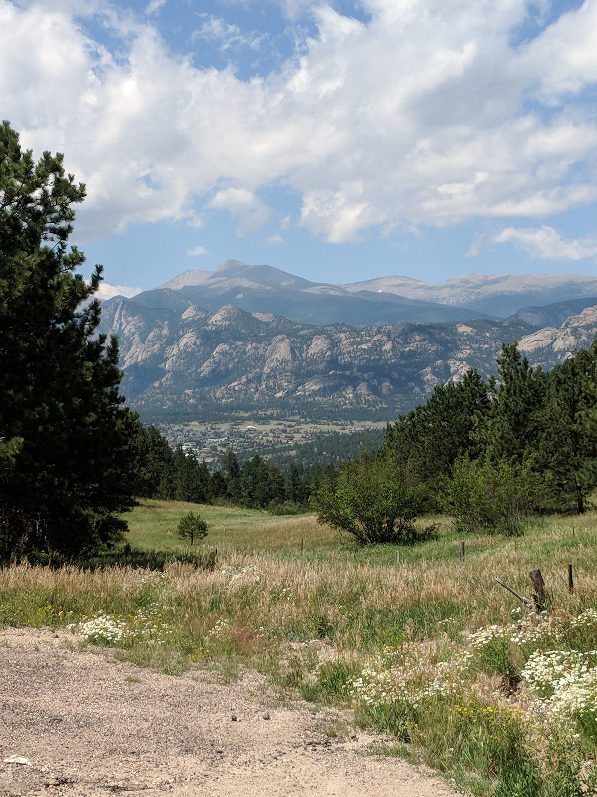
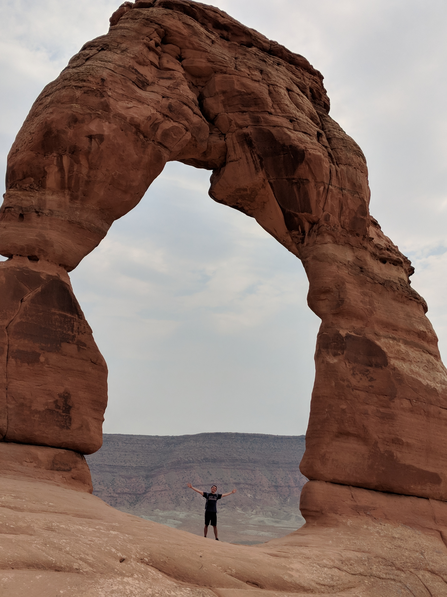

Holy guacamole! You should register for the site to get more info!

National Park FAQ
- How old is the National Park System?
- The National Park Service was created by an act signed by President Woodrow Wilson on August 25, 1916. Yellowstone National Park was established by an act signed by President Ulysses S. Grant on March 1, 1872, as the nation's first national park.
- What is so great about Yosemite?
- Three of the 10 highest waterfalls in the world are located in Yosemite National Park in California.
- How many areas are in the National Park System?
- The system includes 418 areas covering more than 85 million acres in every state, the District of Columbia, American Samoa, Guam, Puerto Rico, and the Virgin Islands. These areas include national parks, monuments, battlefields, military parks, historical parks, historic sites, lakeshores, seashores, recreation areas, scenic rivers and trails, and the White House.
- What is the largest national park site?
- Wrangell-St. Elias National Park and Preserve, AK, at 13.2 million acres
- What is the smallest national park site?
- Thaddeus Kosciuszko National Memorial, PA, at 0.02 acres
- What is the most-visited national park?
- Great Smoky Mountains National Park
- What is the National Park Service budget?
-
Fiscal Year 2014 Enacted: $2.98 billion
Fiscal Year 2015 Enacted: $2.615 billion
Fiscal Year 2016 Enacted:$2.851 billion
Fiscal Year 2017 Enacted: $2.932 billion - How many employees are in the National Park Service?
- Permanent, temporary, and seasonal employees: More than 20,000
Volunteers: More than 315,000 in 2017 - Which national park is the oldest?
- Yellowstone National Park (in Wyoming, Idaho, and Montana) is the oldest U.S. national park, founded in 1872.
- Which national park is one of the seven wonders of the world?
- The Grand Canyon, in Grand Canyon National Park in Arizona, is known as one of the Seven Natural Wonders of the World.
National Park Facts
Zion
- Predators in the park include cougars, gray fox, ring-tail cats and coyotes.
- Approximately 2.5 million people visit the park each year. In 1920 only 3,692 people visited the park
- The park contains the about 800 native plant species, having the richest plant diversity in all of Utah.
- The Olympic Torch passed through the park in 2002 while on its way to Salt Lake City.
Rocky Mountain
- Are 76 million years old and their highest peak is Mount Elbert in Colorado.
- Pikes peak is the second most visited peak in the world.
- Divide the rivers draining into Arctic and Atlantic Ocean from those draining into Pacific
- The mountain time zone is located in the Rocky Mountain region
Arches
- Courthouse Towers is a group of tall stone columns in the park.
- Has been featured in scenes from Indiana Jones and the Last Crusade (1989).
- Balanced Rock is a very large rock (three school buses in size) balanced naturally in the park.
- Is made up of red rock formations including arches, pinnacles, balanced rocks, and gigantic fins.


